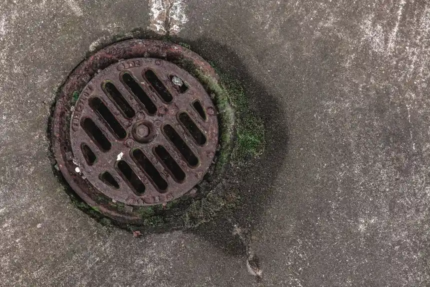

Drain Cleaning in Old Naples, Florida
From classic beach cottages near the Naples Pier to renovated luxury villas along Broad Avenue and vibrant restaurants on 5th Avenue South, Old Naples plumbing requires nuanced experience. We diagnose aging cast iron, mature tree root intrusion, and commercial kitchen grease lines with high-definition video scoping before clearings.
Drainage Considerations in Historic Old Naples
Properties built in earlier development eras throughout Old Naples feature distinctive plumbing systems that require care and proper tool selection:
Cast-Iron Scale & Tuberculation
Homes built prior to 1980 often have cast-iron waste lines. Humidity and corrosive waste cause internal oxidation, creating rough scale that catches toilet paper. We utilize specialized descaling chains to smooth interior walls without damaging the metal.
Mature Canopy Palm & Banyan Roots
The lush tropical streetscapes of Old Naples are lined with decades-old palms and ficus. Moisture-seeking roots easily penetrate older clay pipe joints. Our root-cutting machinery severs these blockages cleanly.
High-Density Restaurant Grease
The dining corridors along 5th Avenue South and 3rd Street South require heavy grease lateral maintenance. High-pressure hydro jetting eliminates grease blockages during non-operational hours.
How Old Naples Property Owners Choose Solutions
Every appointment begins with video pipe scoping so you can see inside your line before authorizing any procedure.
When Cabling is Best: For isolated clogs in guest suites, kitchen sinks, or older historic fixtures where cast-iron walls are delicate, our drain snaking and cabling safely restores flow without pressure shock.
When Sewer Cleaning is Necessary: If multiple fixtures are gurgling or roots have breached the main lateral cleanout, our sewer cleaning service cuts roots and extracts solid obstructions.
When Hydro Jetting is Recommended: For heavy grease encrustation in downtown restaurants or heavy sand settlement in lanai drains, hydro jetting scrubs the full 360-degree pipe surface.

Look Before We Quote
Preserving Vintage Cast-Iron Plumbing in Old Naples Estates
Old Naples features some of Collier County's most charming historic residences, from 1950s coastal beach cottages along Gulf Shore Boulevard to majestic estates near 3rd Street South. Maintaining drainage systems beneath historic terrazzo and hard-pine flooring demands specialized plumbing preservation techniques.
Cast-Iron Tuberculation & Descaling
Vintage cast-iron pipes installed under concrete slabs in the mid-20th century develop internal rust blisters known as tuberculation. These jagged nodules catch toilet paper and hair. Rather than breaking through historic floors, we use specialized mechanical descaling cables that smooth out the internal pipe walls, restoring original flow diameter without structural damage.
Banyan & Ficus Root Management
The majestic banyans and ficus trees lining 5th Avenue South and 3rd Street South have extensive underground root systems. Their thirsty roots penetrate old bell-and-spigot cast-iron lead joints. We deploy serrated root-cutting blades and low-pressure hydro scouring to shear roots clean without disturbing delicate historic pipe joints.
Tidal Groundwater & Low-Elevation Flow
Proximity to Naples Bay and the Gulf creates extreme tidal water table variations. During king tides and tropical storms, high groundwater reduces natural gravity discharge speeds. We ensure exterior cleanouts are fitted with watertight mechanical expansion plugs to prevent floodwater from entering sewer lines.
Old Naples Homeowner Drainage Questions
Can cast-iron pipes under an Old Naples slab be saved without trenching my floors?
In the vast majority of cases, yes. Unless the pipe has experienced a complete structural collapse, specialized mechanical descaling and hydro scouring can remove internal rust nodules and restore smooth flow. Furthermore, if structural repair is needed, modern trenchless pipe lining can install an epoxy sleeve through existing cleanouts without jackhammering historic floors.
How quickly can you dispatch a service van to 3rd Street South or 5th Avenue South?
Our mobile vans are stationed centrally in Collier County and regularly operate directly within Old Naples. For active residential backups or commercial dining emergencies, our average response window is 30 to 60 minutes, 7 days a week.
Historic Cottage & Estate Plumbing Audit Guidelines
Many residences along Broad Avenue South, 3rd Street South, and Gulf Shore Boulevard date back to Naples' mid-century coastal boom. Protecting these historical structures requires specialized non-destructive diagnostic techniques.
Zero-Floor-Destruction Video Scoping
Before any equipment enters an Old Naples home, we run a self-leveling SeeSnake camera from the outdoor perimeter cleanout. We verify the exact line pathway beneath historic terrazzo, tile, or Cuban tile floors, identifying obstructions without breaking through valuable architectural materials.
Vintage Cast-Iron Scale Smoothing
Original 1950s cast-iron pipes develop heavy rust blisters that snag toilet tissue. Using specialized rotational chain knockers and low-vibration cables, our plumbers gently hone down the rust scale, restoring a smooth interior channel without cracking aged pipe walls.
City of Naples Municipal Tie-In Check
We trace your sewer lateral directly to the City of Naples municipal connection in the alleyway or street easement. If roots originate on the city side of the property line, we provide recorded timestamped video evidence for municipal service requests.
Historic Cottage & Estate Plumbing Audit Guidelines
Many residences along Broad Avenue South, 3rd Street South, and Gulf Shore Boulevard date back to Naples' mid-century coastal boom. Protecting these historical structures requires specialized non-destructive diagnostic techniques.
Zero-Floor-Destruction Video Scoping
Before any equipment enters an Old Naples home, we run a self-leveling SeeSnake camera from the outdoor perimeter cleanout. We verify the exact line pathway beneath historic terrazzo, tile, or Cuban tile floors, identifying obstructions without breaking through valuable architectural materials.
Vintage Cast-Iron Scale Smoothing
Original 1950s cast-iron pipes develop heavy rust blisters that snag toilet tissue. Using specialized rotational chain knockers and low-vibration cables, our plumbers gently hone down the rust scale, restoring a smooth interior channel without cracking aged pipe walls.
City of Naples Municipal Tie-In Check
We trace your sewer lateral directly to the City of Naples municipal connection in the alleyway or street easement. If roots originate on the city side of the property line, we provide recorded timestamped video evidence for municipal service requests.
Old Naples Drain Cleaning FAQs
Why do older properties in Old Naples frequently suffer from slow drains?
Many historic cottages and mid-century homes in Old Naples feature original cast-iron or clay waste lines. Over decades, internal rust scale (tuberculation) forms rough ridges inside the pipe that catch toilet paper and hair, while mature landscaping roots seek joints.
How do you clean fragile cast-iron pipes without breaking them?
We begin with high-definition video camera evaluation to measure pipe wall thickness. For fragile cast iron, we use calibrated mechanical cabling with specialized descaling chains or low-pressure flushing rather than harsh excessive hydraulic force.
Do you service commercial restaurants along 5th Avenue South and 3rd Street South?
Yes, we provide emergency and scheduled commercial grease line jetting, floor sink clearing, and main cleanout maintenance for restaurants and retail shops throughout downtown Old Naples.
Can roots from old coconut palms and banyan trees be cleared from sewer lines?
Yes, our technicians use heavy-duty mechanical root-cutter blades sized to the pipe diameter to shear through thick woody roots, followed by flow testing.
What should I do if a drain backs up during the peak winter tourist season?
Stop water usage to prevent overflow and call our Naples dispatch line immediately at +1 (239) 688-0557. We provide prompt priority dispatch to Old Naples addresses 7 days a week.
Historic Floor Protection Guarantee in Old Naples
Old Naples estates frequently boast irreplaceable heart-pine planking, vintage terrazzo, and Spanish quarry tiles. Our technicians establish a protective cleanout perimeter with neoprene floor runners and fluid containment basins before unwinding a single foot of cable. We guarantee zero marks, scratches, or moisture damage on your valuable historic flooring.